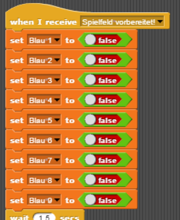

Bisher kann also ein Tic-Tac-Toe Feld von Sprite1 auf den Hintergrund (Stage) gezeichnet werden und Markierungen des Spielfelds, durch Sprite2 und Sprite3, können vorgenommen werden. Nun soll es darum gehen, wie der Gewinn oder Verlust der Spieler automatisch erkannt werden kann, über einen vierten Sprite, den „Spielleiter“.
Dazu werden insgesamt 18 Variablen eingeführt, die einem Feld und einer Farbe zugeteilt werden, und den booleschen Wert „True“ annehmen, sobald auf genau ihrem Feld eine Markierung von genau ihrer Farbe vorgenommen wird.
Am Anfang des Spiels, noch bevor Sprite2 und Sprite3 für den Spieler zu sehen sind, setzen sie die Variablen ihrer jeweiligen Farbe zurück, auf den booleschen Wert „False“. Sprite2, also das Ufo, setzt die ihm zugehörigen Variablen Rot1 - Rot9 zurück. Sprite3, also der Astronaut, setzt die ihm zugehörigen Variablen Blau1 - Blau9 zurück. Dies geschieht, nachdem sie die Broadcast-Nachricht „Spielfeld vorbereitet!“ von Sprite1, in Gestalt eines Saturns, erhalten haben. Der zugehörige Programmteil ist auf diesen Bildern zu erkennen:


Sobald jedoch eine der Spielfeldzellen in einer der Farben gefärbt wurde, muss die dazugehörige Variable den Wert „True“ annehmen. Erinnerung: Nach der Markierung des Feldes sendet Sprite2 die Broadcast-Nachricht „Feld markieren: Rot“, Sprite3 sendet die Broadcast-Nachricht „Feld markieren: Blau!“ Sie empfangen diese Nachrichten selbst, anstatt sie an den jeweils anderen weiterzugeben. Auf den folgenden Screenshots ist das Programm abgebildet, welches von diesen Broadcasts ausgelöst wird.

Übersetzung: Der Reporter „Which Tile?“ wird in insgesamt neun If-Bedingungen den Nummern der Spielfeldzellen gleichgesetzt. Wenn also, beispielsweise, der Sprite sich aktuell in Zelle1 befindet, da er nach der Markierung eine Sekunde wartet, wird die Variable Rot1 (Sprite2) oder Blau1 (Sprite3) richtig gestellt. Anschließend, wird, über eine Broadcast-Nachricht, dem Spielleiter (Sprite4) mitgeteilt, den Spielstand zu prüfen.
So wird also eine markierte Spielfeldzelle nicht nur auf das Spielfeld aufgezeichnet, sondern auch im Variablenverzeichnis registriert. Das ist von hoher Relevanz für die Bestimmung des Gewinners / Verlierers.
Der Spielleiter (Sprite4) prüft nach jedem Spielzug, den Ufo und Astronaut machen, den aktuellen Spielstand, wie es ihm mit der Broadcast-Nachricht „Spielstand prüfen: Rot / Blau!“ mitgeteilt wurde. Genauer funktioniert dieser Prozess folgendermaßen: